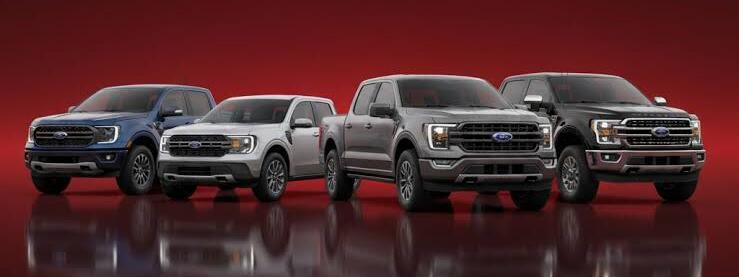

Automóviles
Vehículos utilizados principalmente para el transporte de personas.
Conoce más sobre la marca Ford.
Ford Motor Company es una empresa fabricante de vehículos fundada en 1903 por Henry Ford.
La marca es conocida por fabricar automóviles, camionetas y otros vehículos.

Ford ofrece diferentes tipos de vehículos para distintas necesidades.
Vehículos utilizados principalmente para el transporte de personas.
Vehículos que pueden utilizarse para transportar personas y carga.
Vehículos que combinan espacio interior y comodidad para diferentes viajes.
Al conocer un vehículo es importante revisar sus diferentes características.
Puedes seguir estos pasos para obtener información de un vehículo.